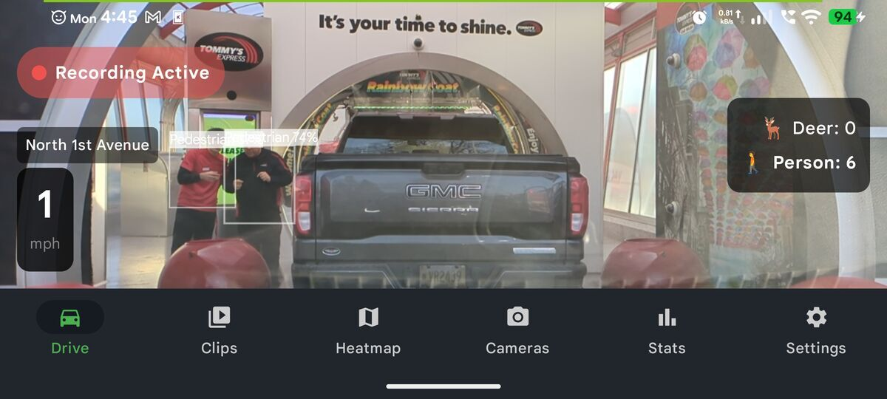

YOLO AI Object Detection in DriveSight
DriveSight runs a YOLO neural network directly on your phone to detect deer, animals, vehicles, and people in real time while you drive. Bounding boxes appear on the dashcam feed as objects are detected. Everything runs on-device at approximately 7 frames per second — no internet, no cloud, no video ever sent anywhere.
Most "AI dashcam" features mean the footage gets sent to a server somewhere, analyzed remotely, and the results come back over the internet. DriveSight's AI detection works completely differently: the neural network runs on your phone, on your footage, without touching any server.
Here's a look at what it detects, how the model works, and why running AI on-device matters for privacy and reliability.

What Gets Detected
The YOLO model in DriveSight is trained on the standard COCO dataset with additional fine-tuning for dashcam-specific scenarios. It detects objects across four main categories:
Wildlife
Vehicles
People
Road Objects
When the model detects an object, a labeled bounding box appears on the dashcam feed in real time. Each box shows the object class and the model's confidence score. Detections appear and disappear frame by frame as objects enter and leave the camera's view.
How YOLO Works on Your Phone
YOLO — which stands for You Only Look Once — is a neural network architecture designed specifically for real-time object detection. Unlike older detection methods that scanned an image multiple times at different scales, YOLO processes the entire frame in a single pass through the network. That's what makes it fast enough to run on mobile hardware.
DriveSight uses a compact version of YOLO optimized for mobile inference. The model file is bundled inside the app. When you enable AI detection, the app loads the model into memory and begins passing camera frames through it at a fixed interval.
Technical Specs
On phones with a dedicated neural processing unit (NPU) — like Snapdragon 8-series, Google Tensor, or Dimensity 9000+ chips — the model runs through the NPU rather than the CPU, which is faster and more power-efficient. On older hardware without an NPU, the model falls back to GPU or CPU inference. The detection still works; it's just slightly slower.
Why Deer Detection Matters
Deer collisions cause roughly 1.5 million accidents in the US each year, with peak risk at dawn and dusk when visibility is lowest. A deer can cross a road faster than most drivers can react — from the moment a deer enters headlight range to impact is often under a second.
DriveSight's YOLO detection adds an extra layer of warning: the bounding box appears on-screen the moment the model detects an animal, even before it's fully lit by headlights. The visual alert can trigger earlier than human perception alone, especially when the animal is partially obscured by vegetation at the roadside.
This is different from the deer detection guide which covers wildlife hotspot warnings based on geographic data — AI detection operates frame by frame on the live camera feed and flags actual animals in view, not just high-risk zones.
Privacy: Why On-Device Matters
The standard approach for AI features in consumer apps is to send data to a cloud server, process it remotely, and return results. This is simpler to build and typically more accurate (cloud hardware is faster). But it means your footage, or frames from it, leave your device.
DriveSight's AI runs entirely on-device for a simple reason: your footage stays yours. No frames are ever transmitted to any server. The model doesn't need an internet connection to run. If your phone has no SIM card and no WiFi, AI detection works exactly the same.
The privacy policy is explicit: AI detection runs on a local YOLO model. No video is ever sent to any server. The model itself is bundled in the app — there are no API calls to any AI service.
Enabling AI Detection
AI object detection is a DriveSight Pro feature. To enable it:
- Open DriveSight and go to Settings
- Under Pro Features, tap AI Object Detection
- Toggle it on — the model loads into memory (takes a few seconds the first time)
- Start a drive session — bounding boxes appear on the live camera feed as objects are detected
Enabling AI detection increases CPU and GPU usage compared to recording alone. On most phones this has no effect on recording quality. On very old or low-end hardware, if detection is slow, the app automatically reduces inference frequency to avoid dropping recording frames.
See it in action
AI object detection is included in DriveSight Pro alongside parking mode, 336,000+ camera alerts, and dual camera recording. Free to download.
Download DriveSight FreeFrequently Asked Questions
What does DriveSight's AI detect?
Deer, animals (dogs, cats, horses, birds, and more), vehicles (cars, trucks, buses, motorcycles, bicycles), people, stop signs, and traffic lights. Detection runs in real time with bounding boxes drawn on the camera feed as objects are identified.
Does the AI send video to the cloud?
No. All AI processing runs on the phone using a local YOLO model bundled in the app. No video, no frames, and no detection data are ever sent to any server. The entire neural network runs on-device without any internet connection.
What is YOLO and why is it used?
YOLO (You Only Look Once) is a neural network architecture built for real-time object detection. It processes an entire frame in one pass, making it fast enough to run on mobile hardware. DriveSight uses a mobile-optimized YOLO model that runs at approximately 7 frames per second on mid-range Android phones.
Does AI detection work on older phones?
Yes. AI detection works on any Android phone running Android 8.0 or later. Phones with a dedicated NPU (neural processing unit) or modern GPU run inference faster. On older hardware, detection still functions but may run at a lower frame rate. The app adjusts automatically to avoid impacting recording quality.
Is AI detection free or Pro?
AI object detection is a Pro feature, included in DriveSight Pro at $6.99/month or $29.99/year. It's bundled with parking mode, 336,000+ camera alerts, dual camera recording, and auto-start on charger.
How is this different from the deer hotspot warnings?
The deer/wildlife hotspot warnings are geography-based — they alert you when you're driving through a region statistically likely to have deer on the road, based on crash report data. AI object detection is camera-based — it runs YOLO on the live camera feed and flags actual animals visible in front of your car right now. Both features can run simultaneously.